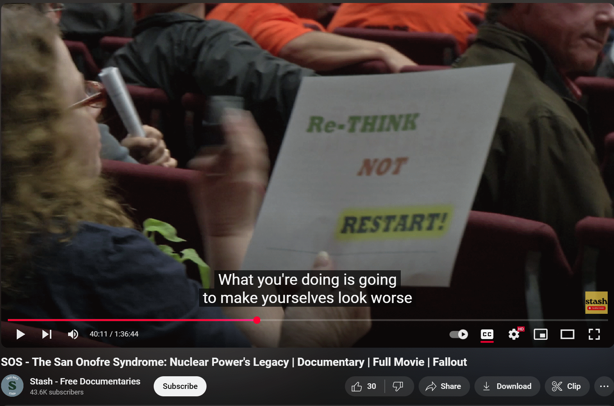

Notes from the meeting:
- 7 people were in attendance
- one person attended after hearing about our meeting on Sproul Plaza while tabling
- we forgot to reserve a room so we just set up in Etch 3106

The San Onofre Syndrome Documentary on YouTube
Additional Notes from the Meetings
Val brought popcorn to share with the class. We watched about forty minutes of the movie during the meeting. There was great uproar every time the movie misrepresented data or presented falsehoods about nuclear power. The group had a lot of fun fact-checking the movie as it progressed.
Notable Quotes
"I think we have been feeding our kids radioactive milk."
- Time stamp: 6:19
- The radiation from detected in the milk was due to its Potassium content. Potassium-40 is a naturally occuring radioactive element that is present in many of the foods all animals eat because it is an important building block of life. Milk is a good source of Potassium and some portion of that Potassium (K) will be K-40, making the milk (and any potassium containing food, like bananas) slightly radioactive.
- Geiger counters are very sensitive devices. They will make a click if they detect even a single bit of radiation. Since there are a lot of natural sources of radiation, it is possible that the clicks that supposedly came from the milk could have actually been from a variety of different natural sources.
"These steam generators are lemons."
- Time stamp: 22:27
- The steam generators at San Onofre were problematic due to their design and repair costs made the plant un-economical to operate.
- A sign in the clip reads "Clean Boron Hydrogen Fusion Power Now" which is comical since p-B fusion is the most unfeasible type of fusion.
"the atoms are unstable, they're like little time bombs"
- Time stamp: 36:18
- This scene is discussing radioactive decay and the fission products that are produced while a reactor is operating.
- The movie correctly points out that these fission products are dangerous, but it departs from an accurate dialogue when they state that any and all radioactive decay can harm the body.
- While it is not good to inhale high concentrations of radioactive elements, the body is adapted to quickly repair itself from any radiation damage caused by natural sources through cell regrowth as it has done throughout history.